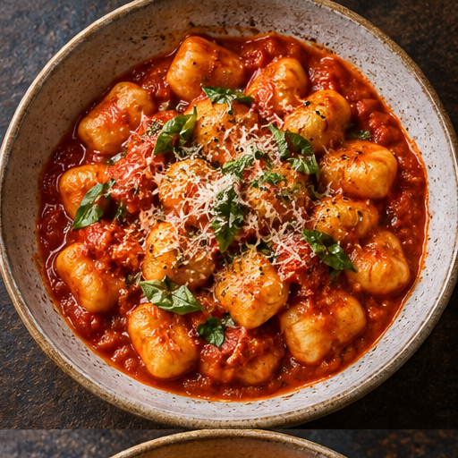
ניוקי עגבניות68 ₪
אוכל שנוצר מחומרי גלם מעולים, באהבה גדולה ובמחיר שפשוט מרגיש נכון.
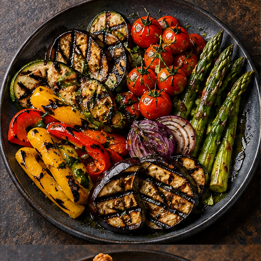
טרי מהאשירקות טריים, תבלינים מקומיים ומטבח ללא קיצורי דרך.
לתפריט העונתי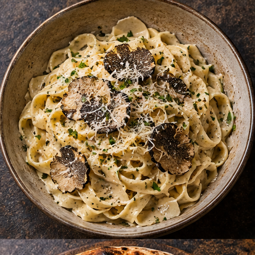
בחירת השף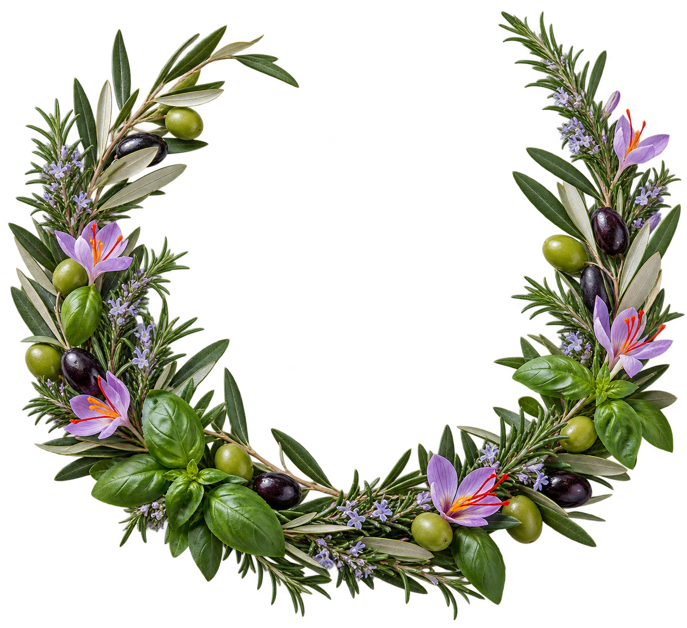
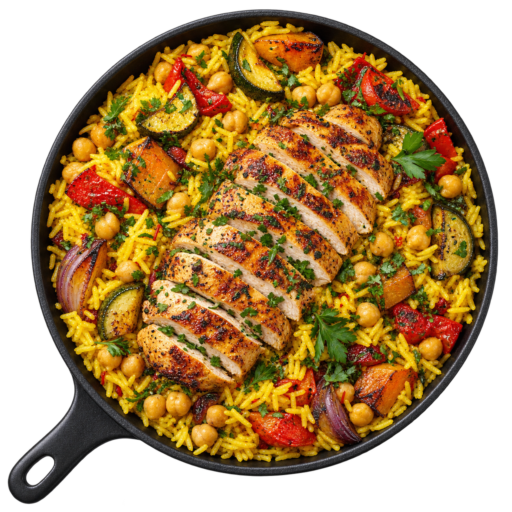
כל מנה נארזת רק אחרי ההזמנה ויוצאת אליכם במסלול הקצר ביותר — חמה, טרייה ומוכנה לשולחן.
מנות שנראות טוב בדיוק כמו שהן טעימות. חומרי גלם אמיתיים, אש מדויקת וצלחת שלא צריכה פילטר.
ארבעה אנשים, שפה קולינרית אחת ורצון להפוך כל צלחת לרגע שנשאר.
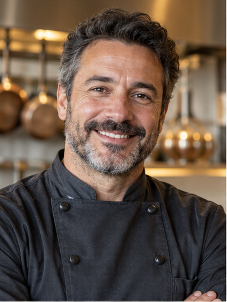
שף ראשי · אש וטכניקה
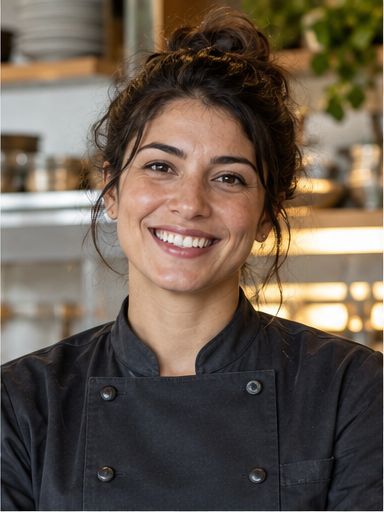
קונדיטוריה · דיוק ורוך
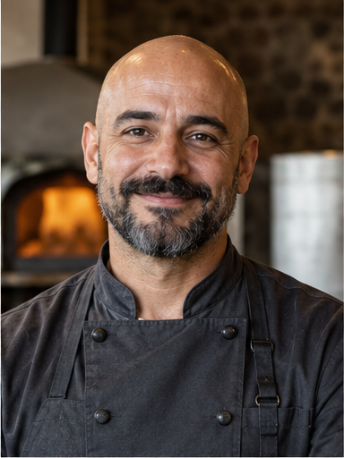
מטבח חם · חומרי גלם
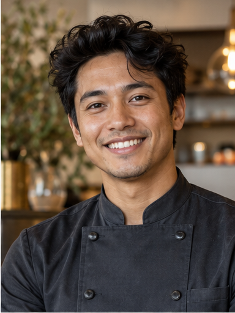
סו־שף · קצב ויצירתיות
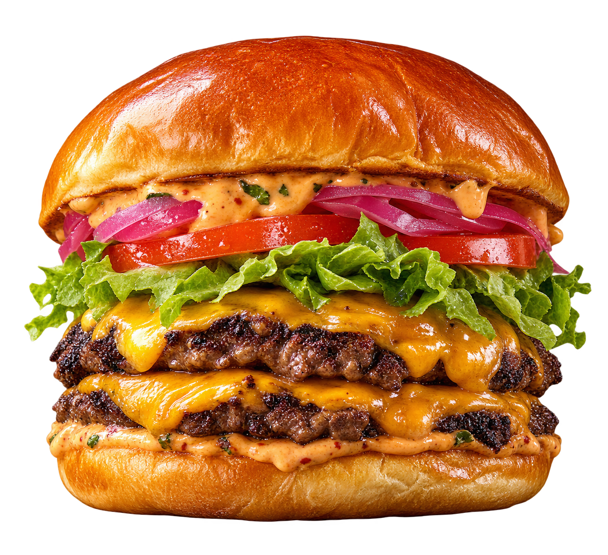
לא משפטי פרסום. רגעים קטנים שאנשים בחרו לשתף אחרי הארוחה.
“הכול הגיע חם, מדויק ויפה. הפסטה הייתה פשוט נהדרת, והשליח אפילו התקשר לוודא שמצאנו את הרוטב בצד.”
מנה אהובה: פסטת כמהין“אחת ההזמנות היחידות שנראות בבית בדיוק כמו בתמונה. הבשר היה עשוי בול והאריזה הרגישה כמו לפתוח מתנה.”
מנה אהובה: המבורגר הבית“אירחנו שמונה אנשים ולא נשאר פירור. הכול הגיע מסודר לפי מנות, הטעמים היו מאוזנים והמשלוח הקדים.”
מנה אהובה: אורז זעפרן
הטעם ממשיך
גם מחוץ לצלחת.
רגעים מהמטבח, חומרי גלם לפני שהם הופכים למנה, והערבים שנשארים איתנו הרבה אחרי הביס האחרון.
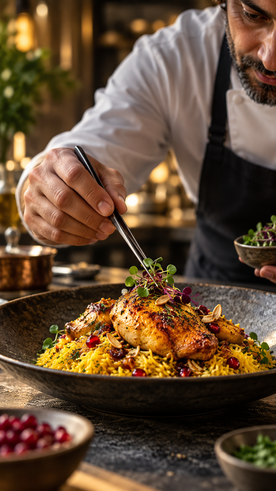
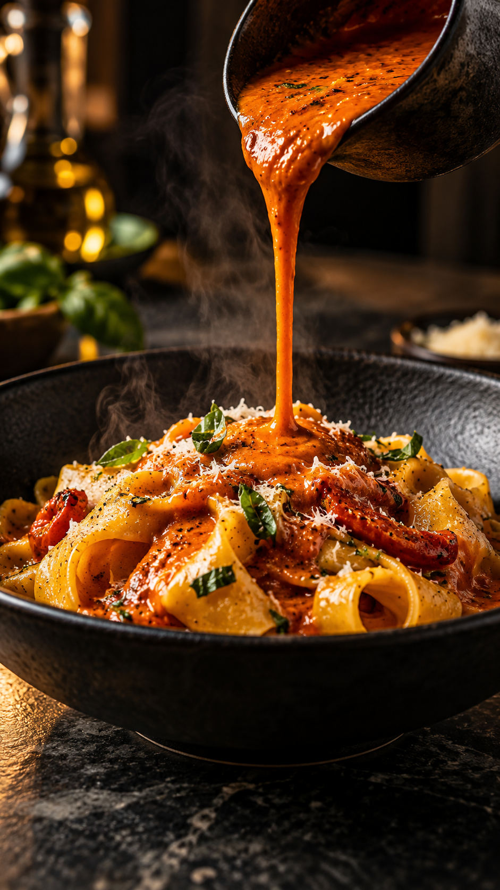
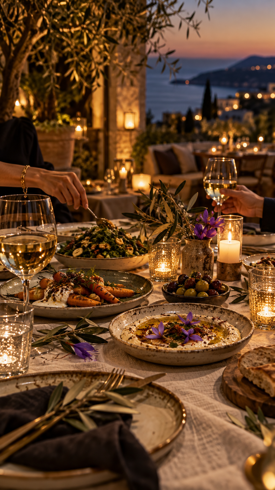